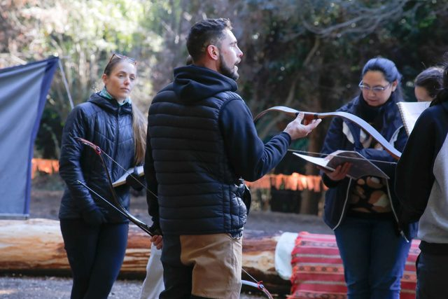
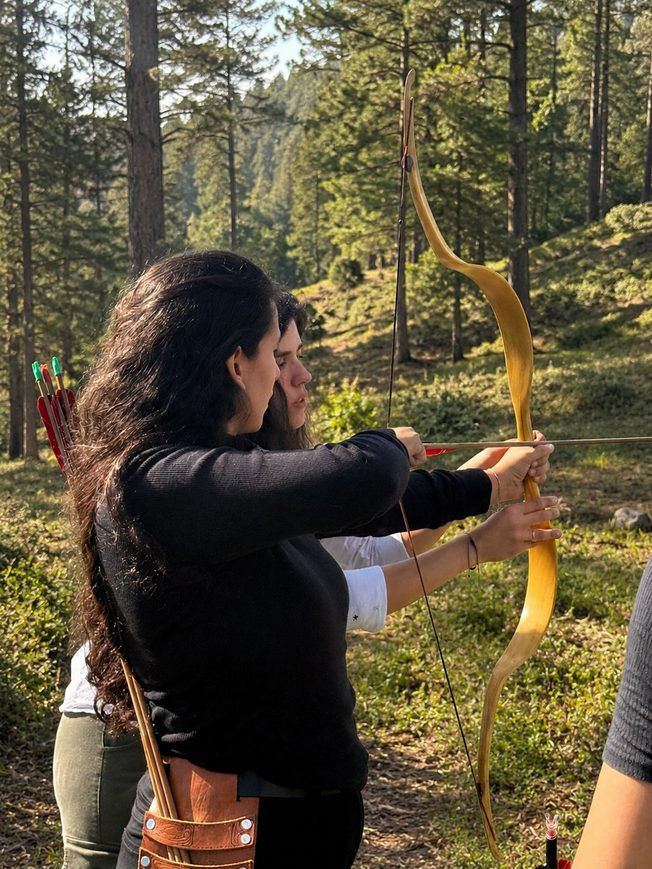

Misión
Formar arqueros montados de manera segura y progresiva, brindando las herramientas técnicas y el conocimiento ecuestre necesarios para que cada alumno desarrolle su máximo potencial, ya sea de forma recreativa o competitiva.
En Jinetes de Orión nos dedicamos a la enseñanza y práctica de la arquería montada en Argentina. Nuestro propósito es poner en valor la actividad y difundir la arquería montada con fines deportivos, culturales y de desarrollo personal.
Buscamos la creación de un binomio armónico entre el jinete y el caballo, priorizando siempre el bienestar animal, la equitación consciente y la precisión técnica del tiro tanto a pie como en la pista. Proponemos un espacio de formación integral donde se encuentren la disciplina, el enfoque mental, el disfrute y el respeto por la naturaleza.
Formar arqueros montados de manera segura y progresiva, brindando las herramientas técnicas y el conocimiento ecuestre necesarios para que cada alumno desarrolle su máximo potencial, ya sea de forma recreativa o competitiva.
Consolidar un centro de referencia de arquería montada en la región para impulsar su crecimiento a nivel nacional e internacional. Promover una comunidad apasionada que comparta los valores de compañerismo, superación y respeto.

